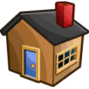

Gita Zeinstra

- Zaandijk
- 
- 23 jaar
- Barista
Ik werk al 4 jaar als barista, koffie is één van mijn passies
Ik heb hiervoor software engineering en CMD op de HvA gedaan. Daarvoor heb ik applicatieontwikkelaar op het mbo gedaan
Ik hou heel erg van muziek, ik ben vooral fan van Bring me The Horizon, Ice Nine Kills en Muse
Ik hou van katten